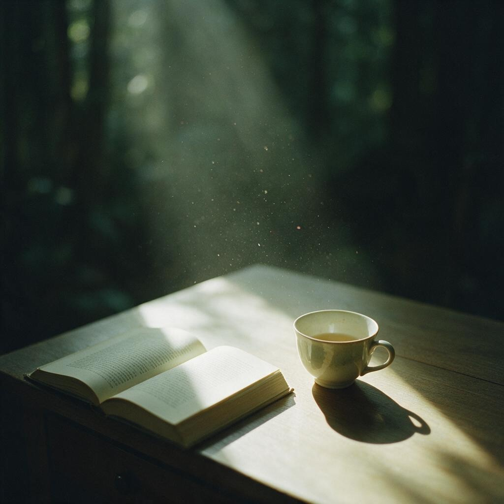

我们常把最真的感受藏在一张照片里。
不解释，不表演——只是承认：这一刻，被我看见了。
收藏馆
最近被留下的画面
按心情筛选。没有排行榜，也没有点赞——只有你愿意与人分享的那一帧。
这个心情下还没有照片。换一个筛选，或者留下你的第一帧。
留下一帧
把你的照片，放进这面墙
上传后会进入共享收藏馆，其他人打开也能看到。写一句心情或场景， 让这一帧不只停在自己的相册里。
- 支持 JPG、PNG、WebP
- 建议单张不超过 8MB
- 写入共享存储，访客可见

关于这里
一个给内倾直觉者的角落
INFJ 常被形容为「安静的理想主义者」。我们不一定说得清楚自己的感受， 但一张照片往往能替我们说出口。这个站点因此很慢、很静： 少交互噪音，多留白，让画面自己说话。
它不是社交广场，更像一本可以共同翻阅的相册。 你可以只看，也可以放一张进来。不必完美构图——真实的第一反应更重要。
关于「所有 INFJ 共同上传」
照片保存在云端共享存储，固定网址 infj-gallery.infj-gallery.workers.dev 上所有人打开都能看到最新上传，不依赖个人电脑开机。 公开上传无人工审核，请自觉不传隐私、敏感或侵权内容。